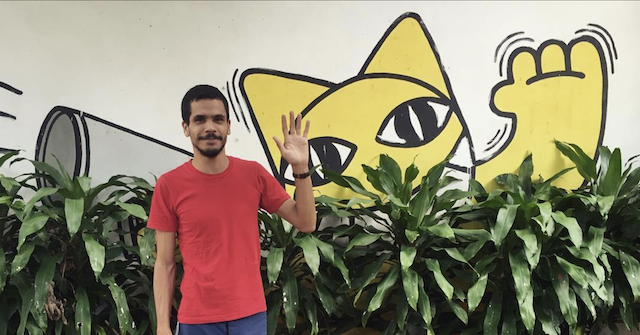

ofá estudos
ofá estudos é a empresa de joão paulo reys, pesquisador, roteirista, editor e documentarista.
Brilhante redator, roteirista e homem de criação com o qual trabalhei, João Paulo Reys é um dos profissionais mais promissores do audiovisual brasileiro, dotado de uma rara percepção do mundo à nossa volta. — Fausto Fawcett
contato: ofaestudos arroba gmail ponto com
